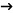

PDF export test
text text
text
|
Icon |
Description |
Required settings |
|
|
This icon indicates that the page is currently published on the live site by means of configuration of the Publish from and Publish to properties on the page's Form tab. If the page is under workflow, it also needs to be in the Published workflow step for this icon to appear next to it. |
Display published icon |
|
|
This icon indicates that the page is not published on the live site. When a page is not under a workflow, the icon indicates that the Publish to property is set to a past date and time. Under a workflow, the icon indicates that the page has not yet been published, i.e. that it has no previously published version. |
Display not published icon |
|
|
This icon appears next to pages that are scheduled to be published in the future. Without workflow, this happens when the Publish from value on their Form tab is set to a future date and time. Under workflow, the same applies, while a page must not have a previously published version (if it has a previously published version, the icon is displayed instead). |
Display not published icon or Display published icon |
|
|
These two icons appear next to pages under workflow that already have a published version and another version is scheduled to be published. This happens when the new version already is in the Published workflow step and the Publish from value on its Form tab is scheduled to some future date and time. In other words, no other work is to be done on page and the system is only waiting for the Publish from value on the Form tab before it publishes the page. |
Display published icon or Display version not published icon |
|
|
This icon appears next to pages under workflow that already have a published version and a new version of the page is being created, but is not published yet. In other words, the icon is displayed next to pages that already have a previously published version, and are in any workflow step before the Published step. |
Display version not published icon |
|
|
This icon appears next to pages that are archived. Archived pages are no longer visible on the live site, but are still present in the content tree and can be restored when needed. You can archive a page by clicking the Archive button on the Properties -> Workflow tab. |
Display archived icon |
|
|
This icon indicates that the page is currently checked-out. That means that it is being edited by another user. You can't edit a page while it is checked out, you have to wait until the user finishes editing and checks the page back in. See Content locking for more details. |
Display checked out icon |
|
|
This icon appears next to pages that are not available in the currently edited culture. |
Display not translated icon |
|
|
This icon appears next to pages that have been submitted to a Translation service and are waiting for the translation to be completed. |
N/A (this icon is always enabled) |
|
|
This icon is displayed next to linked pages. Linked pages only represent a link pointing to another page in the content tree. See the Creating linked pages topic for more details. |
Display linked icon |
|
 |
This icon appears next to pages that have a redirection configured in Properties -> Navigation -> URL redirection. |
Display redirected icon |
|
|
Displayed next to pages that are currently being A/B tested. |
N/A (this icon is always enabled) |


Examples
Creates a New service page (CMS.MenuItem type) under the Services page
|
XML |
JSON |
|
URL: ~/rest/content/currentsite/en-us/document/Services Data: <CMS_MenuItem> <NodeClassID>4114</NodeClassID> <DocumentName>New service</DocumentName> <DocumentPageTemplateID>23438</DocumentPageTemplateID></CMS_MenuItem> |
URL: ~/rest/content/currentsite/en-us/document/Services?format=json Data: {"NodeClassID":4114,"DocumentName":"New service","DocumentPageTemplateID":23438} |
Creates a News article page (CMS.News type) under the News page
|
XML |
JSON |
|
URL: ~/rest/content/currentsite/en-us/document/News Data: <CMS_News> <NodeClassID>4112</NodeClassID> <NewsTitle>News article</NewsTitle> <NewsReleaseDate>2014-06-05T00:00:00+02:00</NewsReleaseDate> <NewsSummary>Summary</NewsSummary> <NewsText>Text</NewsText></CMS_News> |
URL: ~/rest/content/currentsite/en-us/document/News?format=json Data: {"NodeClassID":4112,"NewsTitle":"News article","NewsReleaseDate":"2014-06-05T00:00:00Z","NewsSummary":"Summary","NewsText":"Text"} |
Creates a French version of the existing Services page on the sample Corporate site
|
XML |
JSON |
|
URL: ~/rest/content/site/CorporateSite/fr-fr/document/Services Data: <CMS_MenuItem> <NodeID>5</NodeID> <DocumentName>French Services</DocumentName></CMS_MenuItem> |
URL: ~/rest/content/site/CorporateSite/fr-fr/document/Services?format=json Data: {"NodeID":5,"DocumentName":"French Services"} |
Updating existing pages
HTTP method: PUT
Synchronizing SharePoint libraries
How synchronization of SharePoint libraries works
All changes that you make in Kentico to the content of SharePoint libraries take effect in Kentico and SharePoint at the same time.
All changes made in SharePoint to the content of SharePoint libraries available in Kentico are reflected in Kentico with delay.

Changing the period when the system automatically reflects changes made in SharePoint
By default, the system checks if changes have been made in SharePoint to the content of available libraries every 12 hours.
If any such changes are identified, the system automatically removes from the libraries all deleted files and starts downloading ones that have been added and modified.
To change the period when the system automatically checks the current state of a selected library in SharePoint and reflects the changes in Kentico:
Open the SharePoint application.
Edit (
 ) a library.
) a library.Switch to the General tab.
Change the value of the library's Synchronization period property as required.
Click Save.
The system now automatically checks the current state of the library in SharePoint and reflects the changes in Kentico at the new interval.
The following Actions are available for each version:
 View version - opens a new window where you can compare the object's data between different versions. See Viewing and comparing version data.
View version - opens a new window where you can compare the object's data between different versions. See Viewing and comparing version data. Rollback version - returns the object to the given version. The rollback does NOT include the object's child objects, if there are any (for example alternative forms, transformations, queries).
Rollback version - returns the object to the given version. The rollback does NOT include the object's child objects, if there are any (for example alternative forms, transformations, queries). Delete - deletes the version from the object's history.
Delete - deletes the version from the object's history.... -> Rollback with children - if the object has child objects, you can use this action to perform the rollback including the child objects.